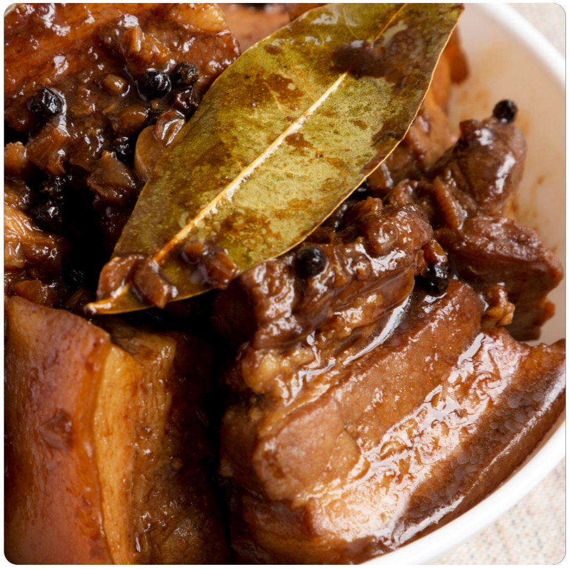

The best
adobo
ever! 🎀🎀🎀
🍲Adobo Recipe🍲
Ingredients
Amount/Measurement
🐔Chicken/🐷Pork
1kg
Soy Sauce
1 Cup
Vinegar
1 Cup
Garlic (Minced)
4 Cloves
Peppercorn (Paminta Liso)
1 Teaspoon
Bay Leaves (Paminta Dahon)
2 Pcs
Instructions:
In a bowl, marinate the chicken or pork with
soy sauce
,
vinegar
,
minced garlic
,
peppercorns
, and
bay leaves
. Let it marinate for at least
30 minutes
.
In a pot, cook the marinated meat
over medium heat
until the meat is browned.
Add water if needed and simmer until the meat is tender.
Adjust the taste by adding more
soy sauce
or
vinegar
according to your preference.
Serve hot and enjoy your delicious adobo!
